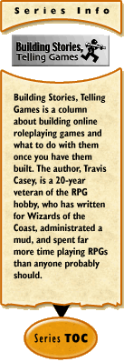

|
Building Stories, Telling Games #67: Monsters (or, Dragons and Orcs and Unicorns, Oh My!)by Travis Casey Monsters are an established part of fantasy role-playing games of all stripes, from tabletop to multi-player online. Typically, they're there to give the players something to do -- the classic being "kill the monsters, take their treasure." But that, of course, gets repetitive. So how do you spice up your monsters? And what else can you use them for? Anyone who's read this column for long knows that I like to define things. So let's start off by talking about what a "monster" is. I'm using "monster" in the classic D&D sense of the term -- meaning not just strange creatures that the characters do battle with, but including any creature or person the characters encounter. Thus, I'm including "NPCs" under the heading of "monster" for this. (Some games use the term "mobile" or the shortening "mob" for this, but I've never gotten comfortable with that.) Monsters, then, can fill many roles in an online game:
Let's take a look at each of these. As opponents, important ways for monsters to vary are in power and tactics. Power, it should be noted, includes not only the "personal power" of a monster, but what resources it has available. Of course, the nature of applicable resources will vary depending on the game -- armor, weapons, spells, minions, money, access to sources of raw materials can all be applicable resources. The different kinds of power are very important -- and should affect the tactics used by a monster. Differences in the level of a power can make a monster more difficult to overcome, but they won't change how playing against a particular monster feels. A different kind of power can change feel significantly, and different tactics can make even more of a difference. Variations in appearance help players to identify what sort of monster they're fighting... and, in combination with human memory and the tendency to anthropomorphize, can add a new aspect to a game. Many people have had the feeling that a particular inanimate object "had it in for them" or was "special" in some way -- and if one orc can be repeatedly distinguished from other orcs in the game, then the vagaries of chance will likely result in players mentally assigning such attributes to some of the orcs as well. However, giving the same old monster a new "skin" might make it interesting again for a short time, but players will quickly realize that it's not "really" different. When using monsters as user interface, there's a limit to the amount of variance that's desirable -- after all, consistency helps make interfaces more usable. However, depending on the game, there may still be useful variations that can be made. For example, varying how much a shopkeeper will pay for something depending on how much of it he/she already has in stock can add greatly to a trading game -- or add a new aspect to a combat-based game. (Of course, for a non-combat game, "monsters" who might fall under "user interface" in a combat game may be "opposition" -- e.g., in a trading game, the shopkeepers wish to sell at the highest price possible and buy at the lowest, while the player wishes to do the reverse. In such a situation, more thought needs to be given to the "tactics" of the shopkeepers.) Variations in appearance can also be useful here. If there are multiple similar interfaces, having the characters associated with them look different can help players remember where they are right now (in a graphical game, of course -- in a text-based one, you might want to assign the different shopkeepers different names and refer to those names repeatedly). For scenery, appearance is of primary importance. "Backdrop" monsters should fit in where they are... or should be used to establish that something unusual is going on. For example, a courtier who keeps going back and forth to a peasant farm might be used to point towards something. If there's just been a peasant revolt, having lots of peasants roaming around the former imperial court can help highlight it. Behavior is also important for scenery monsters -- peasants on a farm should be doing things like hoeing, weeding, and moving dung around. Courtiers should be walking haughtily, having whispered conferences in secluded spots, etc. One interesting type of behavior can be how monsters of different types act towards each other. If a wandering dwarf and orc meet each other, do they fight? If a peasant walks into the imperial court, do courtiers ignore his/her existence? Or stay back away to avoid the smell? Of course, doing this sort of thing moves scenery towards being spice, especially if it applies to player characters as well... Spice monsters are almost entirely defined by their behavior. Typically they're one of a kind, or only a few existing of a particular type -- a little bit of spice can add to a game, but a lot of it can get annoying. Now, there's one major problem which gets in the way of this nice, neat categorization... namely, realism. Realistically, a player character ought to be able to walk up and talk to any monster in the game. They might not get a useful answer, but they should be able to. And it ought to be possible for player characters to try to kill any monster in the game... but killing monsters who aren't "opposition" can mess things up. One can try to get around this realistically, but this seems to me to be one of those cases where reality rapidly gets too complicated to easily model. In current games, it's probably simplest to just not allow attacking shopkeepers, quest monsters, and the like. Players get used to it fairly easily, and it prevents many problems. Well, that's it for this time... next time, I'll be concluding this piece on monsters. See you in fourteen!
|